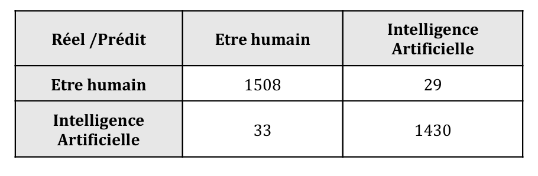

In recent years, the emergence of tools like ChatGPT have made it increasingly common to generate texts using artificial intelligence. This raises the question of whether it is possible to distinguish between human-written and machine-generated text. While in some cases it might be difficult to answer this question based on human judgment alone, natural language processing (NLP) techniques and machine learning models can be trained to learn from the discrepancies between human- and AI-written texts, and then classify and predict the likelihood that a given text was produced by a non-human author. To achieve this, it is necessary to have a dataset containing essay excerpts that we can confidently attribute to either source. Access to full analysis and to Python code.
Data and Preprocessing
The analysis was conducted on a dataset from Kaggle, containing 10,000 short English texts. Each entry was labeled with a binary variable: generated = 1 for AI-generated text and 0 for human-written. In order to analyze the data, the texts underwent some necessary standard preprocessing steps:
Stopword removal: Common but uninformative words such as “the” or “is” were excluded.
Lemmatization: Words were reduced to their base form (e.g., “running” → “run”).
Tokenization: Texts were segmented into meaningful units (tokens).
Text Representation: TF-IDF To feed the texts into machine learning models, the TF-IDF (Term Frequency-Inverse Document Frequency) method was used to transform textual data into numerical vectors. TF-IDF assigns higher weight to words that are frequent in a document but rare across the corpus, allowing the model to identify distinctive terms.
Exploratory Analysis of Textual Features
Beyond model training, the project also involved a deep exploration of the texts’ linguistic characteristics.
On the one hand, a variety of syntactic and stylistic features were extracted and compared between AI- and human-generated texts: use of punctuation, average sentence length, number of paragraphs, grammatical quality (spelling and coherence), sentence complexity (syntactic depth), readability (Flesch index), lexical diversity, frequency of grammatical categories (nouns, verbs, adverbs), and semantic coherence (cosine similarity between sentence embeddings)
- Results: These analyses revealed that human-written texts tend to show greater variability, richer structure, and a more diverse use of grammar, while AI-generated texts are generally more formal, uniform, and neutral in tone.
In addition, we visualized the words frequency by plotting word clouds, as demonstrated in the following figure.
We can highligh a first notable difference between the two categories: human-written texts contain several highly frequent, often repeated words (“people,” “think,” etc.), while AI-generated texts present a more diverse lexicon, with a more evenly distributed frequency. A notable exception is “electoral college,” which appears frequently in both corpora. These elements suggest a tendency for humans to repeat themselves more, whereas AI mobilizes a more extensive vocabulary.
Sentiment and Topic Modeling
- Topic Modeling
We now move on to identifying the topics present in the texts. The objective is to highlight the major topics addressed in each category (human vs. generated texts). To do this, we used the Latent Dirichlet Allocation (LDA) method, a topic modeling algorithm that automatically detects groups of co-occurring words reflecting three latent themes defined in our study. To obtain interpretable results, we first imposed rules on the text-to-digital conversion using the CountVectorizer function, such as: excluding words that appear in more than 90% of paragraphs, deleting words contained in fewer than two paragraphs, and ignoring stopwords from the English dictionary. The figure below shows the top 15 most frequent words in each of the topics. From these words, we can infer latent variables.
The first topic seem to concern learning, education, and technology. Indeed, words related to school, teaching, and technology are prominent, accompanied by other, more general terms such as “life,” “help,” and “people.” This suggests that this topic is quite broad, encompassing personal or academic learning in a digital or scientific context. The second topic evokes politics and the electoral system, with terms specific to these themes such as “election,” “candidate,” “vote,” “president,” and “electoral.” Finally, the last top 15 refers to the transportation dimension, with modern issues such as pollution, urban mobility, autonomous cars, and sustainability all referred to by “pollution,” “driverless,” “usage,” and “reduce.”
- Sentiment analysis
Then, we performed the sentiment analysis using the VADER (Valence Aware Dictionary for Sentiment Reasoning) method, which involves assigning a polarity score to each text: a score greater than 0.05 = a “positive” text, a score of zero = a “neutral” text, and a score less than -0.05 = a “negative” text.
Figure above shows that topics related to education (topic 0) and politics (topic 1) show a very strong predominance of positive sentiments, with 95% and 94% of texts having a positive tone, respectively. We can also observe that the AI-generated texts present a lower proportion of negative sentiments (5% versus 12% for human texts) and a higher proportion of positive sentiments (95% versus 87%). Thus, the AI productions appear overall more positive and less polarized than those of humans.
Classification Models
Five supervised machine learning models were tested: Logistic Regression, Linear SVC (Support Vector Classifier), Non-linear SVC, Random Forest, and Multinomial Naive Bayes. Each model was evaluated using two key metrics: Accuracy: The percentage of correctly classified texts, and F1-score: A balance between precision and recall, especially useful to assess model robustness when categories are unbalanced (more observations of one category than the other).
These results demonstrate that traditional NLP techniques and classic machine learning models are effective at distinguishing between AI-generated and human-written texts, even without access to deep learning models. In particular, the LinearSVC model delivered the best generalization performance with a training accuracy of 99.7% and a test accuracy of 97.9%, followed closely by logistic regression and random forest. The non-linear SVC underperformed due to poor generalization (around 50% of accuracy).
Figure below represents the confusion matrix from our best model: LinearSVC. We observe that only 29 out of 1,537 texts were falsely predicted as AI-generated when they were actually human-generated, while only 33 out of 1,463 texts were incorrectly classified as human-generated when they were AI-generated. This confirms the robustness of our model.

Conclusion
The study confirms that there are identifiable linguistic and structural differences between AI- and human-generated texts, and that it is feasible to automate the detection process using NLP and machine learning. The LinearSVC model, in particular, proved to be well-suited for high-dimensional sparse data like TF-IDF vectors.
However, there are also certain limitations: The dataset consists of a single type of short-form text, limiting generalizability. Likewise, the dataset was likely balanced and annotated artificially, which may not reflect real-world distributions. In future works, we could integrate deeper linguistic variables (e.g., rhetorical structure, discourse markers), use advanced language models such as BERT or RoBERTa, and expand the analysis to more diverse text genres (e.g., tweets, dialogue, narratives).